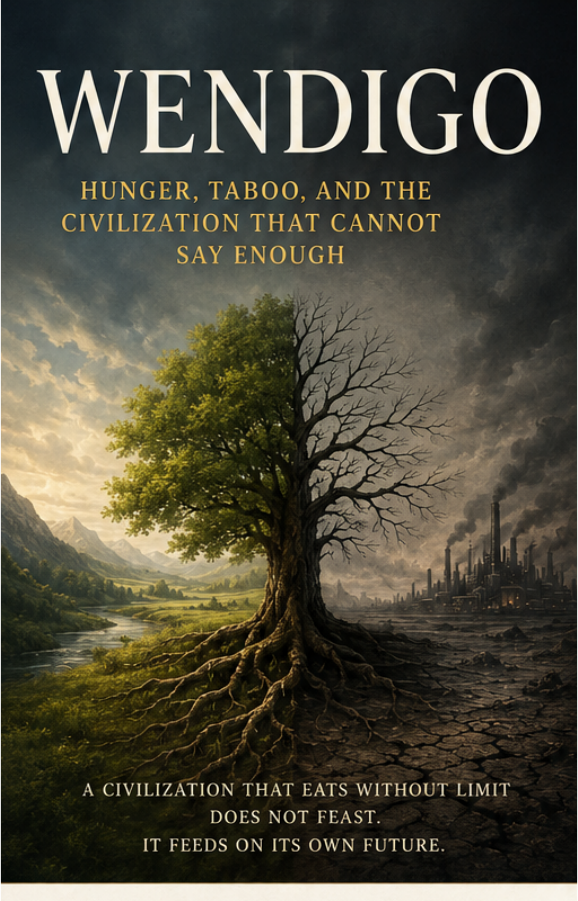

Outfinitist Foundations · Axiologic Research Editions
Wendigo
Hunger, Taboo, and the Civilization That Cannot Say Enough
Follow the monster from winter camps to growth systems and ask why enough can be a condition of survival rather than an enemy of freedom.
A monster is a model
Myths can give a visible face to systems that would otherwise remain abstract. The Wendigo becomes a way to ask how hunger changes when it no longer aims at survival but at self-expansion: more extraction, more accumulation, more territory, more growth, with no internal condition of enough.
The model moves carefully across domains. It does not say that economies, diseases, or people are identical; it asks what patterns of runaway appetite they may share.
From scarcity to the factory of hunger
Taboos once marked thresholds that could not be crossed without threatening a group’s capacity to continue. Modern abundance can remove some material limits while intensifying manufactured desire, distant costs, and the conversion of future conditions into present consumption.
A civilization does not have to want death. It only has to want one more meal.
The wisdom of brakes
Enough is not a demand for deprivation or a denial of ambition. It is a political, ecological, and personal capacity to recognize thresholds before systems consume the conditions of their own renewal. The book develops restraint as a form of freedom that keeps future choice alive.